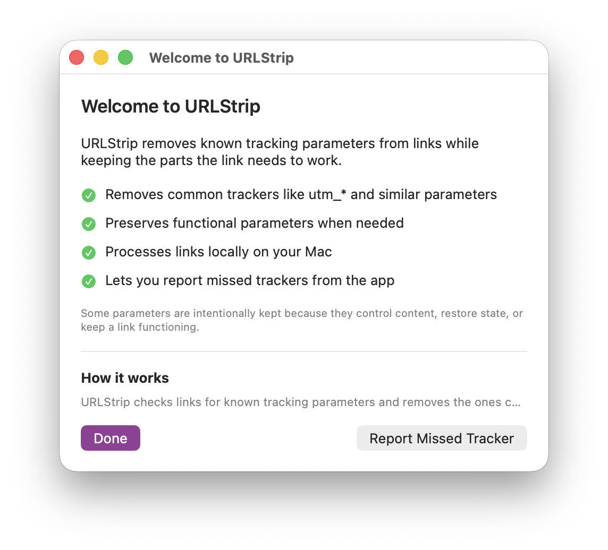
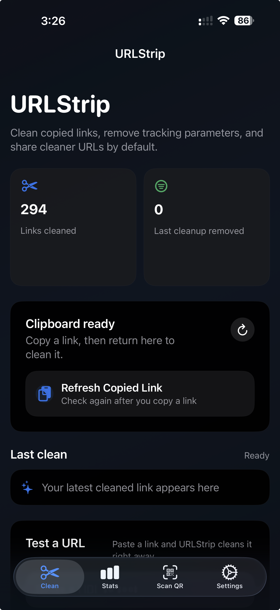

Campaign tags
Parameters like utm_source and
utm_campaign that tell marketing systems where a
click came from.

URLStrip
Silentium servat - silence protects
URLStrip strips known tracking parameters before you open a link, save it, or send it to someone else. It runs locally, supports iPhone, macOS, and Windows, and is free to use.
What URLStrip does
This is the basic idea: A normal link often arrives with extra tracking parameters attached to it. URLStrip removes the known junk and keeps the destination intact.
https://example.com/article?utm_source=newsletter&utm_medium=email&fbclid=IwAR123&gclid=abc123
https://example.com/article
Same destination. Less junk attached to it.
Why it matters
Copy a link from email, a search result, or social media, and there is a good chance it has extra tracking glued onto the end. Some of it measures campaigns, some of it identifies clicks. Some of it can even tie the link back to a person, browser, or session.
Parameters like utm_source and
utm_campaign that tell marketing systems where a
click came from.
Values like fbclid and gclid added by
major platforms to follow clicks across systems.
Other junk added by analytics, email, affiliate, and marketing systems.
The result is a cleaner link with less junk and less tracking attached to it.
What it does
URLStrip checks a link for known tracking parameters and strips out what doesn't need to be there. It keeps the parts the destination actually needs, including normal paths and parameters that control content or state.
utm_*How it works
URLStrip is built to stay out of the way. On desktop, it fits into normal copy-and-paste use instead of asking you to route links through some service. The cleanup happens locally and the result is a cleaner link you can keep using normally.
01
Install URLStrip for your platform and leave it there.
02
Copy, paste, or share a link the same way you already do.
03
URLStrip removes known tracking junk on the device itself.
04
Open it, save it, or send it without dragging the junk along.
Some parameters are intentionally kept because they control content, preserve state, or are required for the destination to work.
Trust
URLStrip cleans links on your device instead of routing them through someone else's cloud service.
There is no login, subscription wall, or account setup just to clean a link.
URLStrip is grounded in the ClearURLs ruleset and extended with maintained additions where they improve real-world results.
Tacita Labs is building privacy tools with a practical, local-first bias shaped by years of security and privacy work.
Download
URLStrip for iPhone is available as a public TestFlight beta. Current desktop releases are published through the public URLStrip release repository with direct download links and published SHA-256 hashes so people can verify the integrity of what they've downloaded.
URLStrip for iPhone is currently distributed through Apple's TestFlight beta program. The beta may be full depending on available tester slots.
Download URLStrip 1.0.1 for macOS
SHA-256: 8a90190b27027db25686d6538d65e27dddcb048685c2677acd55790607292e43
Verify:
shasum -a 256 URLStrip-1.0.1-macOS-arm64.dmg
Download URLStrip 1.0.1 for Windows
SHA-256: 2d1b30ed7b12f474c6d80c9f34da4e0f40de911e15abed6059f09e69e40ddbce
Verify:
certutil -hashfile URLStrip-1.0.1-windows-x64-setup.exe sha256
Full checksum file: checksums/1.0.1.sha256
Screenshots
Real screenshots. No invented UI, no glossy mockups. Desktop stays lightweight and out of the way. iPhone makes cleanup, controls, and visibility easier.


About
Jim O'Gorman spent nearly two decades helping build Offensive Security, working across leadership, training, product, operations, and community as the company grew through two exits.
Tacita Labs is focused on creating software that helps reduce unnecessary data exposure without creating another account, dashboard, or place your information has to go. The idea is simple: solve the problem without creating another one.
FAQ
No. The point is to clean links locally instead of routing browsing data through another service.
No. Download it, install it, and use it.
It is designed to remove known tracking junk while preserving the parts a link needs to work. Some parameters are intentionally kept when they affect content or function.
URLStrip is grounded in the upstream ClearURLs ruleset and extended with additional maintained coverage where that improves practical results.
Because too many privacy products solve one problem by creating another. Tacita Labs is focused on reducing exposure without demanding more of your data in return.
For product questions, feedback, or general inquiries, reach out at hello@tacitalabs.com.